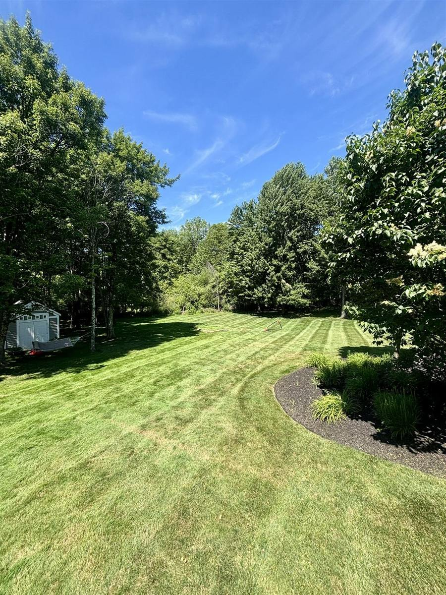

- Home
- Yard of the Month
Every month, April to October
Yard of the Month
Each month we pick one G'N'G yard that looks the best. The winner gets this sign in their lawn and their yard goes up on this page.
Grass 'n' Gardens
Yard of
the Month
April 2027
How it works every month.
- We pick one yard.At the end of each month, our crew picks the yard that looked the best all month.
- We ask you first.If you'd rather not, that's fine. Nothing goes up without your OK.
- The sign goes in.It stays in your lawn for the month. Your yard goes on this page with your first name and town.
The 2027winners.
The first sign goes in at the end of April 2027. Check back each month.
- Coming
April
Picked at the end of the month
- Coming
May
Picked at the end of the month
- Coming
June
Picked at the end of the month
- Coming
July
Picked at the end of the month
- Coming
August
Picked at the end of the month
- Coming
September
Picked at the end of the month
- Coming
October
Picked at the end of the month
Slide to see every month
What we look at when we pick.
The best yards come from both of us. We do the work on our visits, and you take care of it in between.
- The grassThick and green, front to back.
- The bedsSharp edges and fresh mulch with no weeds poking through.
- The bushesTrimmed and healthy.
- How you take care of itWatering when it's dry, and keeping the lawn clear on mowing day.

Questions
Yard of the Month, straight answers.
Don't see yours? Text Harrison. He texts back from his own phone.
Text HarrisonWhat is the Grass 'n' Gardens Yard of the Month?
Each month from April to October, Grass 'n' Gardens picks one customer's yard that looks the best. The winner gets a Yard of the Month sign for their lawn and a spot on our website.
Who can win?
Any yard on a yearly plan with us.
Do you show my address?
No. We only show your first name and your town. We never show your street or your house number.
Do I have to say yes?
No. We always ask first. If you'd rather not, we pick another yard.
Can I put my own yard in?
Yes. Text a photo of your yard to Harrison at (440) 667-9642.
Want your yardon this page?
It starts with a yard plan. Every yard on a yearly plan is in the running.
(440) 667-9642